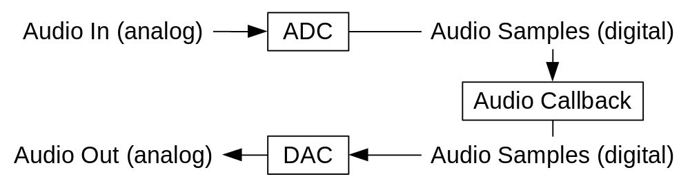
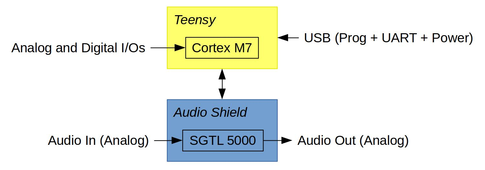

Digital Audio Systems Architectures and Audio Callback slide version
By the end of this lecture, you should be able to produce sound with your Teensy and have a basic understanding of the software and hardware architecture of embedded audio systems.
Basic Architecture of a Digital Audio System
All digital audio systems have an architecture involving at least an ADC and/or a DAC. Audio samples are processed on a computer (i.e., CPU, microcontroller, DSP, etc.) typically in an audio callback and are transmitted to the DAC and/or received from the ADC:

The format of audio samples depends on the hardware configuration of the system.
Architecture of Embedded Audio Systems Such as the Teensy
In embedded audio systems, the component implementing the audio ADC and DAC is called an "Audio Codec." This name is slightly ambiguous because it is also used in the context of audio compression (e.g., mp3) to designate a totally different concept. In the case of the Teensy kits that are provided to you as part of this class, the audio codec we use is an SGTL5000. It is mounted on a shield/sister board that has the same form factor as the Teensy. Audio samples are sent and received between the Cortex M7 and the audio codec using the i2s protocol. As a microcontroller, the Cortex M7 has its own analog inputs which can be used to retrieve sensor datas (e.g., potentiometers, etc.). These analog inputs cannot be used for audio because of their limited precision and sampling rate. We'll briefly show in this lecture about control how these analog inputs can be used to use sensors to control audio algorithms running on the Teensy.

Concept of Audio Blocks (Buffers), Audio Rate, and Control Rate
A large number of audio samples must be processed and transmitted every second. For example, if the sampling rate of the system is 48 kHz, 48000 samples will be processed in one second. Digital audio is extremely demanding and if one sample is missed, the result on the produced sound will be very audible. Most processors cannot process and transmit samples one by one which is why buffers need to be used. Hence, most digital audio systems will process audio as "blocks." The smallest size of a block will be determined by the performance of the system. On a modern computer running an operating system such as Windows, MacOS or Linux, the standard block size is usually 256 samples. In that case, the audio callback will process and then transmit to the DAC 256 samples all at once.
An audio callback function typically takes the following form:
void audioCallback(float *inputs, float *outputs){
// control rate portion
int gain = mainVolume;
for(int i=0; i<blockSize; i++){
// audio rate portion
outputs[i] = inputs[i]*gain;
}
}
audioCallback is called every time a new buffer is needed by the audio interface (ADC/DAC). For example, if the sampling rate is 48 kHz and the block size is 256 samples, audioCallback will be called 187.5 (48000/256) per seconds. Here, the for loop parses the input buffer and copy it to the output by modifying its gain. Note that gain is set outside of the for loop. That's a very common thing to do in the field of real-time audio processing: what happens outside of the for loop is called the control rate and what happens inside the for loop is called the audio rate. The parameters of an audio program are typically processed at control rate since user interface elements usually run at a much lower rate than audio.
Block size is directly linked to the audio latency of the system by the following formula: where is in seconds. Hence, the greater the block size, the larger the latency. For example, a block size of 256 samples at a sampling rate of 48 kHz will induce a latency of approximately 5ms. If the system has an audio input, this value has to be doubled, of course. A latency of 10ms might not seem like a lot but if the system is used for music purposes, this might be perceived by the performer.
Embedded systems such as the Teensy can achieve much lower latencies than regular computers because of their lightness. Hence, the block size of your Teensy can be as small as 8!
First Audio Program on the Teensy: crazy-sine
The course repository hosts an example containing a program synthesizing a sine wave on the Teensy and controlling its frequency: crazy-sine. This program contains all the building blocks of a real-time audio program including... the audio callback which can be found in AudioDsp.cpp! The audio callback is implemented in this class in the update method and take the following shape:
#define MULT_16 32767
void MyDsp::update(void) {
audio_block_t* outBlock[AUDIO_OUTPUTS];
for (int channel = 0; channel < AUDIO_OUTPUTS; channel++) {
outBlock[channel] = allocate();
if (outBlock[channel]) {
for (int i = 0; i < AUDIO_BLOCK_SAMPLES; i++) {
float currentSample = echo.tick(sine.tick())*0.5;
currentSample = max(-1,min(1,currentSample));
int16_t val = currentSample*MULT_16;
outBlock[channel]->data[i] = val;
}
transmit(outBlock[channel], channel);
release(outBlock[channel]);
}
}
}
The update method is called every time a new audio buffer is needed by the system. A new audio buffer audioBlock containing AUDIO_OUTPUTS channels is first created. For every audio channel, memory is allocated and a full block of samples is computed. Individual samples resulting from computing a sine wave through an echo (echo and sine are defined in the libraries folder and implement an echo and a sine wave oscillator, respectively) are stored in currentSample. currentSample is a floating point number whose range is {-1;1}. This is a standard in the world of digital audio, hence, a signal actually ranging between {-1;1} will correspond to the "loudest" sound that can be played on a given system. max(-1,min(1,currentSample)); ensures that currentSample doesn't exceed this range.
AUDIO_BLOCK_SAMPLES corresponds to the block size (256 samples by default on the Teensy, but this value can potentially be adjusted). The values contained in currentSample (between -1 and 1) must be converted to 16 bits signed integers (to ensure compatibility with the rest of the Teensy audio library). For that, we just have to multiply currentSample by (if we were looking at unsigned integers, which can happen on some system, we would multiply currentSample by ).
Note that currentSample is multiplied by 0.5 to control the output gain of the system here (we'll see later in this class that echos tend to add energy to the system hence we must limit the gain of the output signal to prevent potential saturation).
Once a full block has been computed, it is transmitted to the rest of the system using the transmit function. Once this is done, the memory that was allocated for the audio block is freed using the release function. The update method is called over and over until the Teensy is powered out.
C++ Sine Wave Oscillator
Sine wave are at the basis of many algorithms in the field of audio. The sound of a sine wave is what we call a "pure tone" since it only has a single harmonic. One of the consequences of this is that all sounds can be synthesized using a combination of sine waves (Fourier transform).
From a mathematical standpoint, a sine oscillator can be implemented with the following differential equation:
with:
- : the peak amplitude
- : the radian frequency (rad/sec)
- : the frequency in Hz
- : the time seconds
- : the initial phase (radians)
could be translated to C++ by writing something like ( is ignored here):
float currentSample = A*std::sin(2*PI*f*t);
however sine oscillators are rarely implemented as such since calling the std::sin function at every sample can be quite computationally expensive. For that reason, it is better to pre-compute the sine wave and store it in a wave table before computation starts. That kind of algorithm is then called a "wave table oscillator."
Sine.cpp, which is used in crazy-sine is a good example of that. It uses SineTable.cpp which pre-computes a sine table:
table = new float[size];
for(int i=0; i<size; i++){
table[i] = std::sin(i*2.0*PI/size);
}
and then makes it accessible through the tick (compute) method:
float SineTable::tick(int index){
return table[index%tableSize];
}
The size of the table plays an important role on the quality of the generated sound. The greater the size, the more accurate/pure the sine wave. A low resolution sine wave will produce more distortion. In Sine.cpp, the sine wave table has a size of which presents a good compromise between sound quality and memory.
It is important to keep in mind that when working with embedded systems memory is also an important factor to take into account.
The sine table is then read with a "phasor." A phasor produces a ramp signal which is reset at a certain frequency. It can also be seen as a sawtooth wave. Phasor.cpp is used for that purpose and its tick method is defined as:
float Phasor::tick(){
float currentSample = phasor;
phasor += phasorDelta;
phasor = phasor - std::floor(phasor);
return currentSample;
}
It hence ramps from 0 to 1 at a given frequency. The phasor object in Sine.cpp is used to read the sine table by adjusting the range of its output:
float Sine::tick(){
int index = phasor.tick()*SINE_TABLE_SIZE;
return sineTable.tick(index)*gain;
}
Exercises
Looping Through a Small Tune
In the world of music technology, musical notes are usually represented by MIDI numbers. In MIDI, each pitch of the chromatic scale has a number between 0 and 127 associated to it: https://djip.co/blog/logic-studio-9-midi-note-numbers
As you can see, middle C (Do) corresponds to number 72. MIDI note numbers can be converted to a frequency using the following formula:
where is the MIDI number.
Write a small tune/song looping through at least 5 notes and play it with the crazy-sine program on your Teensy.
Hint: For that, you'll probably have to replace the myDsp.setFreq(random(50,1000)); line of of crazy-sine.ino by something else.
Solution:
In crazy-sine.ino:
#include <Audio.h>
#include "MyDsp.h"
MyDsp myDsp;
AudioOutputI2S out;
AudioControlSGTL5000 audioShield;
AudioConnection patchCord0(myDsp,0,out,0);
AudioConnection patchCord1(myDsp,0,out,1);
float mtof(float note){
return pow(2.0,(note-69.0)/12.0)*440.0;
}
int tune[] = {62,78,65,67,69};
int cnt = 0;
void setup() {
AudioMemory(2);
audioShield.enable();
audioShield.volume(0.5);
}
void loop() {
myDsp.setFreq(mtof(tune[cnt]));
cnt = (cnt+1)%5;
delay(500);
}
Basic Additive Synthesis
One of the most basic kind of sound synthesis is "additive synthesis." In consists of adding multiple sine wave oscillators together to "sculpt" the timbre of a sound. Both the frequency and the gain of each individual oscillator can then be used to change the properties of the synthesized sound.
A simple additive synthesizer could be implemented from the crazy-sine example by declaring multiple instances of sine. E.g.:
float currentSample = echo.tick(sine0.tick()*gain0 + sine1.tick()*gain1);
but the problem with that option is that memory will be allocated twice for the sineTable array which is a terrible idea in the context of our embedded audio system with very little memory. Instead, the additive synthesizer should reuse the same instance of sineTable for each oscillator. In the tick method of Sine.cpp, try to call the sineTable a second time after float currentSample = sineTable[index]*gain; to add a second oscillator to the generated sample. The value of its index could be something like index = (int) (index*1.5)%SINE_TABLE_SIZE; so that the frequency of the second oscillator is one fifth above the main frequency. In other words, the differential equation of the synth should be:
Hint: Beware of clipping! Adding two sine waves together even though they don't have the same frequency will likely produce a signal whose range exceeds {-1;1}: you should take that into account for your final product.
Solution:
In Sine.cpp:
float Sine::tick(){
int index = phasor.tick()*SINE_TABLE_SIZE;
int index2 = (int) (index*1.5)%SINE_TABLE_SIZE;
return (sineTable.tick(index)+sineTable.tick(index2))*gain*0.5;
}
Bonus solution: Additive.cpp and Additive.h.
Stereo Echo
Reusing the result of the previous exercise, create a second instance of echo (connected to the same instance of sine) with different parameters from the first one that will be connected to the second channel of the output (i.e., the first instance should be connected to the left channel and the second one to the right channel). The final algorithm should look like this:
float sineSample = sine.tick();
float currentSampleL = echo0.tick(sineSample)*0.5;
float currentSampleR = echo1.tick(sineSample)*0.5;
Hint: Beware of memory allocation again! Make sure that the maxim delay of your echo (on the 2 parameters of the class constructor) doesn't exceed 10000 for now for both instances of the echo.
Solution:
- Basic solution:
crazy_sine_stereo.zip - Solution with dynamic memory allocation:
crazy_sine_stereo_dyn.zip
Solution:
In MyDsp.h:
Sine sine;
Echo echo0, echo1;
};
In MyDsp.cpp:
MyDsp::MyDsp() :
AudioStream(AUDIO_OUTPUTS, new audio_block_t*[AUDIO_OUTPUTS]),
sine(AUDIO_SAMPLE_RATE_EXACT),
echo0(AUDIO_SAMPLE_RATE_EXACT,10000),
echo1(AUDIO_SAMPLE_RATE_EXACT,7000)
{
...
// setting up DSP objects
echo0.setDel(10000);
echo0.setFeedback(0.5);
echo1.setDel(7000);
echo1.setFeedback(0.4);
...
// processing buffers
for (int i = 0; i < AUDIO_BLOCK_SAMPLES; i++) {
// DSP
float sineSample = sine.tick();
float currentSampleL = echo0.tick(sineSample)*0.5;
float currentSampleR = echo1.tick(sineSample)*0.5;
...
}